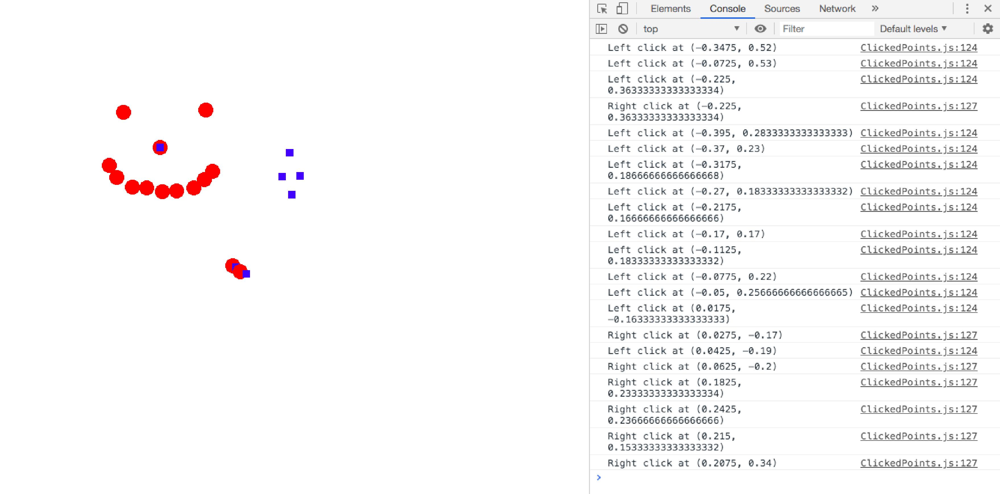

Celine Seghbossian
Login: cseghbos@ucsc.edu
CSE 160 -- Lab 1
Sunday, October 6, 2019
List of Files:
/lab1/
ClickedPoints.js
driver.html
features.html (this file)
output.jpg
This program implements all of the functionality as specified in the Lab1 Requirements:
-
Create a blank (white) canvas at least 400 x 600 in dimension.
Notice whether the canvas is wider, or taller;
and whether the origin is in the middle of the canvas or elsewhere.
-
Recognize left and right mouse clicks.
Echo the mouse positions for each mouse click (use console.log).
-
Maintain a list of points representing positions of mouse clicks (both left and right).
-
When a left click is detected, draw a filled red circle centered at the mouse
position and with radius of 10.
-
When a right click is detected, draw a filled blue square centered at the mouse
position and with a side of length 10.
-
When a both left and right clicks are detected at the same position,
the two shapes are drawn on top of each other.
If the sequence is left followed by right clicks, only the blue square will be visible.
If the sequence is right followed by left clicks, the red circle is visible over the blue square.
The latest mouse click at the same position will determine what's visible there.
For more information on implementation, please reference function descriptions in ClickedPoints.js
Link for grader:
driver.html
